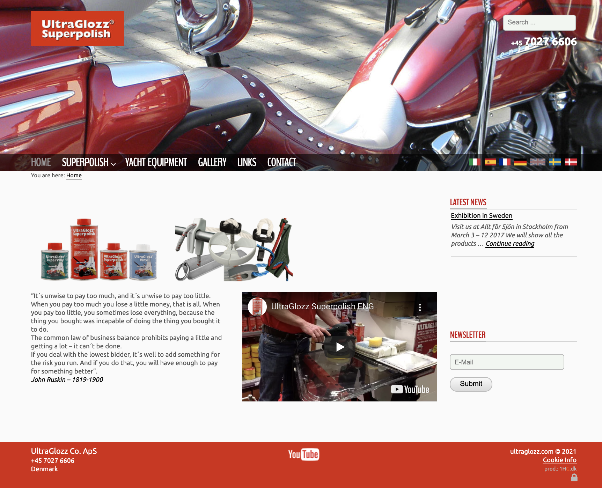
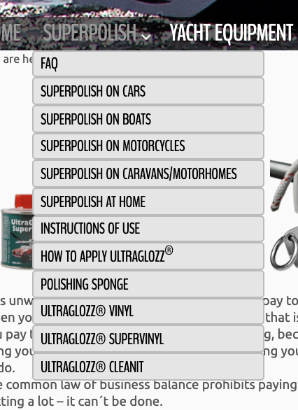
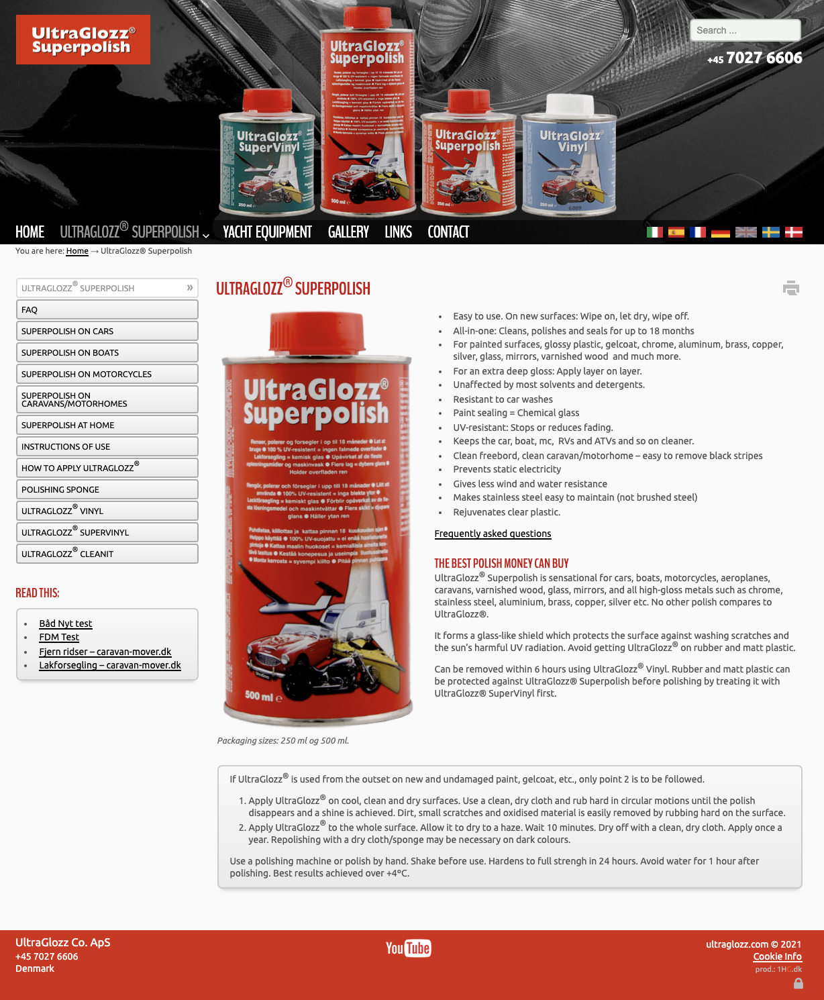
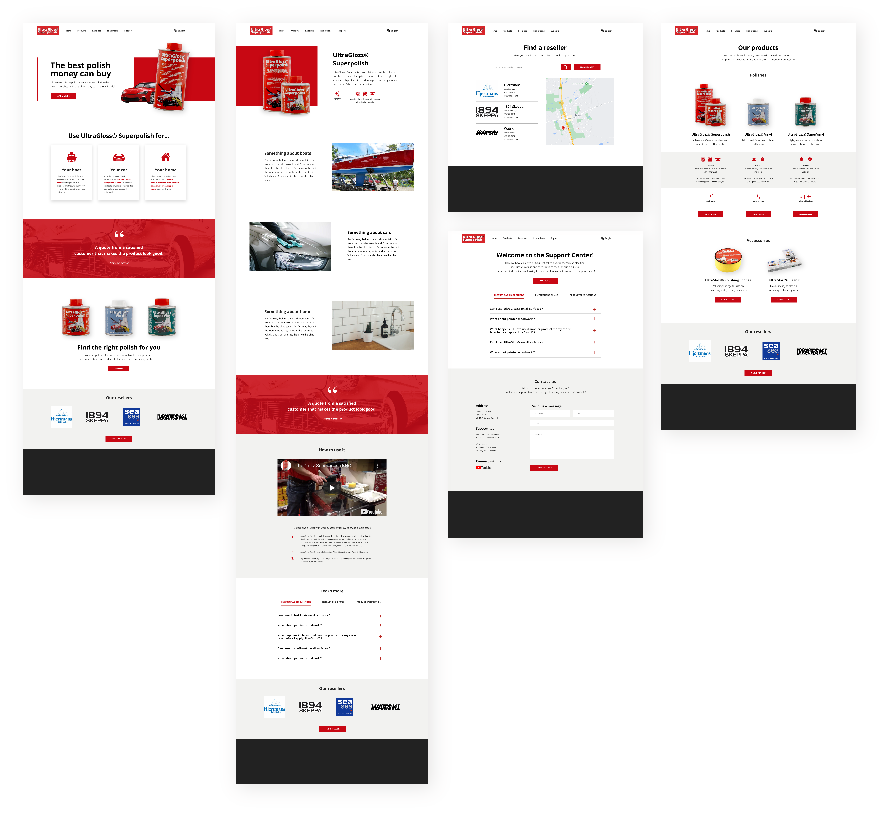

Web design
As part of a course assignment I did a total redesign of UltraGlozz's website and implemented it. Their current website was broken down and analysed, and the new design were prototyped in Adobe XD and then parts were implemented in HTML, CSS and JavaScript.
Role
Web designer
Deliverable
Prototype
Timeframe
3 weeks (50% speed)
Ultraglozz is a Danish company producing multi-use polishes and boat accessories. They are selling their products via resellers and on exhibitions, and not on their website. The purpose of their website is give information about their products and upcoming exhibitions, as well as a way for people to contact them. Visit their website here.
This project was done as a part of a course assignment and UltraGlozz has not been a part of the process. However, they have approved me using some of their material in this portfolio.
The current web design has several design issues that flaws the experience and overall usability of the website. Below is their landing page.
UltraGlozz's own design
There is no obvious part of the landing page that draws the users attention. The header is a big slide show of pictures that takes up room from the products, and the first information we get about the products are small pictures without any explaination. When looking for information about the site and company we get a long quote about money.
The newsletter sign-up does not entice interest, nor explains the advantages of signing up. Why should the user submit their e-mail? The latest news on the website are from four years ago, so what can we expect from this newsletter?
Moving on to language settings. Flags represent countries and would make sense if one where chosing their region because that would affect the products and/or support. However, in this case it only changes the language and therefore the flags are misleading. Common for the flags and navbar is that the active option is gray, making it look disabled rather than active.
UltraGlozz have three polishes and two polish related product, but they have put everything under "Superpolish" which is the name of their most popular polish. If we click "Superpolish" in the navbar, we get a long list of mixed items. The first eight are related to the Superpolish product, and the last four are other products. The hierachry is misleading and makes it difficult to navigate correctly.
Dropdown menu from navbar
The items in the dropdown follows us to the product page for UltraGlozz Superpolish, as seen to the left in the screenshot below. However, it does not always contain the same items. The active item looked disabled in the navbar, and this time it looks like an input field. As previously mentioned, the first eight (now nine) items are related to the same product, but the information in them overlap each other. There is no distinct hierachry of the product information and it is not easy to find the information you are looking for.
Product page for UltraGlozz superpolish
There is much more to say about the current design, but now it is time to move on to my solution!
I created simple wireframes in Adobe XD for desktop and mobile, and a mock-up of the desktop version.
Far far away, behind the word mountains, far from the countries Vokalia and Consonantia, there live the blind texts. Separated they live in Bookmarksgrove right at the coast of the Semantics, a large language ocean. A small river named Duden flows by their place and supplies it with the necessary regelialia.
Far far away, behind the word mountains, far from the countries Vokalia and Consonantia, there live the blind texts. Separated they live in Bookmarksgrove right at the coast of the Semantics, a large language ocean. A small river named Duden flows by their place and supplies it with the necessary regelialia.